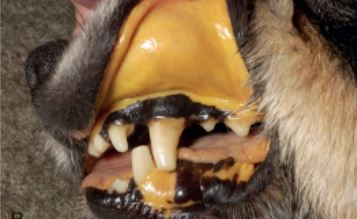

수술한 모든 아이들은 통증이 완화되지 전까지 바이탈 1일 2~3번 측정요망
완화된 아이일 경우 1일 1회 측정요망 (시간을 일정)
체온계로 환축의 직장에서 측정(직장까지 충분히 닿지 않은 경우 측정이 부정확)
직장벽까지 닿도록 충분히 넣고 각도를 약간 기울여서 측정
환축이 힘을 주거나 상처가 난 경우 최대한 무리가 가지 않도록 천천히 넣는다.
정상체온 (37.5 ~ 39)
- 개 : 37.5 ~ 38.5
- 대형견 : 37.3 ~ 38.3
- 고양이 : 38.0 ~ 39.2
고체온(39.5 이상 )
- 감염, 흥분
- 얼음팩,선풍기(Fan),알코올분무(발바닥패드),삭모 등을 통해 체온 낮춰줌
저체온(36.0 이하)
- 쇼크
- 37.0 이하 경우 가온 진행
- 36.0 이하일 경우 사망 가능성 높음(신체검사필수)
- 수술 직후 마취로 인해 체온이 낮아 질 수 있음(핫팩,드라이기,장 온도를 올려 가온)
주의사항
- 입원장 바닥이 뜨겁지 않은지 뜨거운 핫팩이 환축에게 직접 닿지 않는지(화상 위험)
- 가온 중 환축이 Panting(헐떡거리는, 가슴이 두근거리는) 보일 경우 가온 온도 낮추거나 중단
- 체온이 정상범위더라도 말단(발, 귀등)이 차갑지는 않은지 체크
- 드라이기 사용 시 공기가 따뜻하게 만들어줄 뿐 아이에게 직접적으로 쐬어서는 안됨
- 핫팩 사용시 미지근한 핫팩을 아이 심장과 가깝게 두면 체온 상승이 쉬움
- 상태가 좋지 않은 환축의 경우 더운 공기로 인해 호흡이 어려워 질 수 있으므로 확인하며 가온하는 것이 중요
- 수술시에는 체온이 급격히 내려갈 수 있기 때문에은박지로 체온을 보존 warm air(air circulator)을 틀어 체온이 유지할수
있도록
함
심장기능평가(1분 측정)
개 ( 70 ~ 180/min )
- 소형견 : 100 ~ 150
- 대형견 : 70 ~ 120
- 마취시 심박 : 60 ~ 140
고양이 (110 ~ 220) 개보다 심박이 빠른 편
주의사항
- 심박 70회 이하(고양이 100회 이하 ) 또는 지나치게 빠른 경우, 비정상적인 상태
- 측정 시 심박의 강약, 일정하게 뛰고 있는지 여부도 체크
- 측정시에는 "두-근" 음이 울리는 것이 1회 측정
- 사타구니 안쪽의 심박을 느껴 측정 할 수 있으며 청진기. 혈압기도 사용 가능
호흡을 들숨.날숨을 1회 기준으로 1분 측정
신체 조직의 적절한 산소 공급 및 혈액에서 이산화탄소를 제거하는 능력 반영
개
- 정상 : 10 ~ 30회 / min
- 마취시 : 06 ~ 20회 / min
고양이
- 정상 : 25 ~ 40회 / min
- 마취시 : 10 ~ 20회 / min
주의사항
- 수면시 측정하는 것이 정확
- 호흡 양상이 편안하고 자연스러운지도 같이 확인
비정상적인 호흡패턴
- panting
- 입으로 빠르게 호흡
- EX) 흥분시 , 운동 직후 보이는 호흡
- 빈호흡
- 개구호흡
- 입으로 깊게 호흡하는 모습(코로 정상적인 호흡을 하지 못하고 입으로 호흡하는 모습)
- 흥분해서 헥헥거리는 것과 구별 필수
- 고양이가 개구호흡을 보일 시 매우
응급상황응급처치 실시
- 노력성 호흡
-
서호흡
- 호흡수가 평균보다 느린 경우
- 8회 미만/분 비정상적인 상태
- 중환자의 경우 호흡이 느려지다 멈출 수 있음(
확인필수)
환축의 점막(잇몸)의 상태(mm)와 점막을 손가락으로 눌렀을 때
다시 혈색이 돌아오는데 걸리는 CRT 말초신경의 순환이 잘 이뤄지고 있는지 파악
CRT : 1 ~ 1.5초 정도 정상
- Pink
- 정상
- 염증이 있거나 흥분시 빨개질 수 있음
- 종에 따라 색 구분이 어려울 수 있음
- pale/white
- 빈혈
- 혈관수축,관류량 부족
- 말단이 차가울 수 있음
- blue(청색증)
- 저산소증,쇼크
- 급격히 흥분할 시 나타날수 있음
- 호흡이 힘들어 질 수 있으므로 산소 공급 또는 편한 자세를 취해야함
- 삽관 시 나타날 수 있음
- SPO2 수치가 저하될 수 있음
- Yellow

- 황달
- 간이 안 좋을 때 사용
- 혈액이 깨졌을 시에도 나타남
- 잇몸 외에도 피부 안구 yellow 변함
- 점상출혈
- 응고장애
- 잇몸 이와에도 피부에 출혈 반점이 생김
- Dry한 상태
- 피부를 잡아 당긴 후 제자리로 돌아가는 시간을 측정하는 시간
- 1초이내로 돌아와야 함
- 탈수 의 가능성이 있으나, 나이 피부 탄성에 따라 달라지므로 여러가지 요소들과 함께 판별 필요
| 탈수 정도 |
증상 |
| [ < 5% ] |
- Skin Turgor : <1sec
- 정상상태(임상적 증상 X)
|
| [ 6 ~ 8% ] |
- Skin Turgor : 1 ~ 2sec
- 경미한 탈수 상태
- 피부를 비틀었을 때 금방 회복
- 피부의 탄력이 감소하고 가죽같음
|
| [ 8 ~ 10% ] |
- Skin Turgor : 2 ~ 3sec
- 중증 탈수상태
- 피부를 비틀었을때 회복속도 느림
- 피부의 탄력이 감소하고 가죽같음
- 구강점막이 끈적거리고 건조
- 안구 건조 및 푹 꺼져있는 상태
- 심박 증가
|
| [ 10 ~ 12% ] |
- 심한 탈수 상태(피부탄력없음)
- 정상상태로 돌아가지 않고 남아있음
- 안구 건조 및 푹 꺼져있는 상태
|
| [ 12 ~ 15% ] |
|
- 탈수교정
{(BW / 탈수% X 1000) / Hr} + 수액 유지 속도
주의사항
- 노견일 경우 피부 탄력저하로 Skin turgor 가 지연될수 있음(탈수와 혼동X)
- 견종 특성(바셋하운드, 샤페이등) skin turgor 체크시 유의
- 눈에 라이트를쏴봄으로써 홍채가 빛에 따라 축소/확장 이루어지는지 확인
- 1초안에 반응
- 신경질환이 있을 시 반응X /느려짐
- 탈수,쇼크,출혈,질병으로 인한 설사 등 체액의 보충이 필요할 때 수액요법 사용
- 수술(마취)로 인한 심장기능의 저하가 생길 경우 수액요법 사용
- 카테터
- IV(정맥) 라인 잡을 때 사용
- 니들 숫자가 작을 수록 사이즈가 작아짐
- 소형견 경우 24G 자주 사용
- 3M Tape
- 종이 타입의 테이프
- 2가지 사이즈(굵기 차이)
- 라인 잡을 시 / 카테터 제거 시 지혈용으로 감쌀 떄 사용
- Scalp Vein(나비침)

- 숫자가 낮을 수록 니들사이즈가 작아짐
- 수액줄과 루어룩캠을 연결해주는 역할
- 3M Tape(마이크로포어)을 사용하여 고정
- 루어룩캡

- 카테터를 막아놓기 위한 도구
- 아래 단면은 고무로 되어있어 나비침, 각종 주사제 주입 용이
- 가끔 혈액이 굳어 카테터를 막는 경우 흔함
- 3way conector
- 2가지 이상의 주사제/ 수액이 들어가야 할 경우 연결
- 벨브를 열고 닫는 방식
- 수액연결세트
수액연결줄
익스텐션 튜브

- 수액이 아이에게 들어갈수 있도록 연결하는 세트
- 행동반경이 넓은 아이들의 경우 익스텐션 튜브 장착
- 3way를 달았을 경우 익스텐션 튜브 창작
용량계산
- 유지 용량
BW X 2.5 {(BW X 10) / 4}
- 1kg 미만 / 3개월 미만일 경우 Kcal로 계산
{( BW X 30 ) + 70 } / 24
적용경로
- IV(intravenous)
- 정맥 카테터
- 주로 다리 요측피정맥에 카테터 장착 / 혈관으로 바로 적용
- 혈관을 따라 빠르고 정확한 양의 수액을 적용 가능
- IV 장착 부위의 부종 체크
- 뇨량 체크( 들어간 만큼 배출되고 있는지)
- 폐수종 생길수 있음
- SQ(Subcutaneous)
- 피하수액 : 피하를 통해 수액 흡수 (IV 보다 느림)
- 수액을 체온과 비슷한 정도로 데워서 사용 (차갑거나 뜨겁지 않게 유지)
- Devtrose 제제 절대 금지
- IO(Subcutaneous)
- 골내 카테터 장착
- 거의 사용하지 않음
- 소동물에게 적용
결정질(Crytaloid)
- NS(Normal Saline)
0.9% NaCl
- 등장성 수액
- 체액 대체
- 심장 질환 있을 경우 신중하게 사용
- 수술 중 세쳑용으로도 사용
0.45% NaCl
- 저장성 수액
- 나트륨 제한 필요시 적용
- 쇼크 상태에서 사용금지
- HS(Hartmann Saline)
- Lactated Ringer's Solution
- 등장성 수액
- Ca , Lac 함유
-간질환, 고칼슘혈증 있을 경우 사용X
- IP 제제와 같이 사용 X
- 본원에서는 수술 후 TLK 만드는데 사용